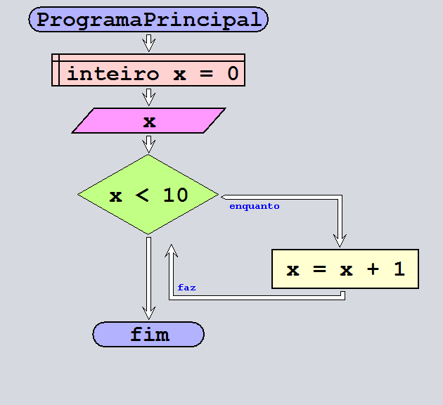
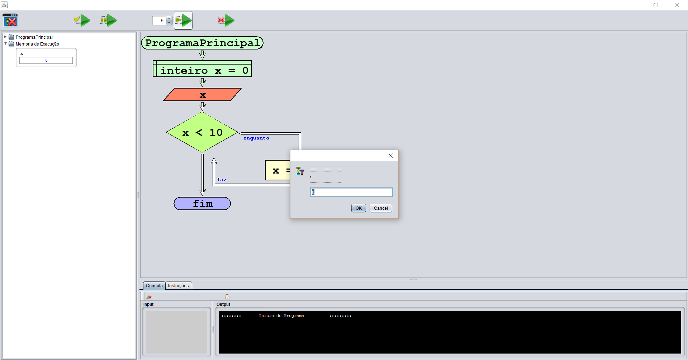

O read é uma função que pede ao utilizador uma introdução de valores para as variaveis descritas no programa.
Botão que representa a criação da instrução escrever:

Menu que abre depois de clicar no borão acima, este menu é onde se vai escrever o que se vai ler:

A imagem a baixo vai apareçer no fluxograma (programa principal) quando se preencher corretamente o menu acima:
No exemplo em baixo, podemos ver que quando o fluxograma esta no passo de ler o valor de x,
ele pede ao utilizador o valor que este quer dar ao x e de seguinda o x toma o valor que o utilizador introduziu.

Na imagem a baixo podemos ver o fluxograma no modo de execução.
Este é o passo em que o programa pede ao utilizador para ele introduzir o valor que vai ser atribuido ao x.

Índice da ajuda